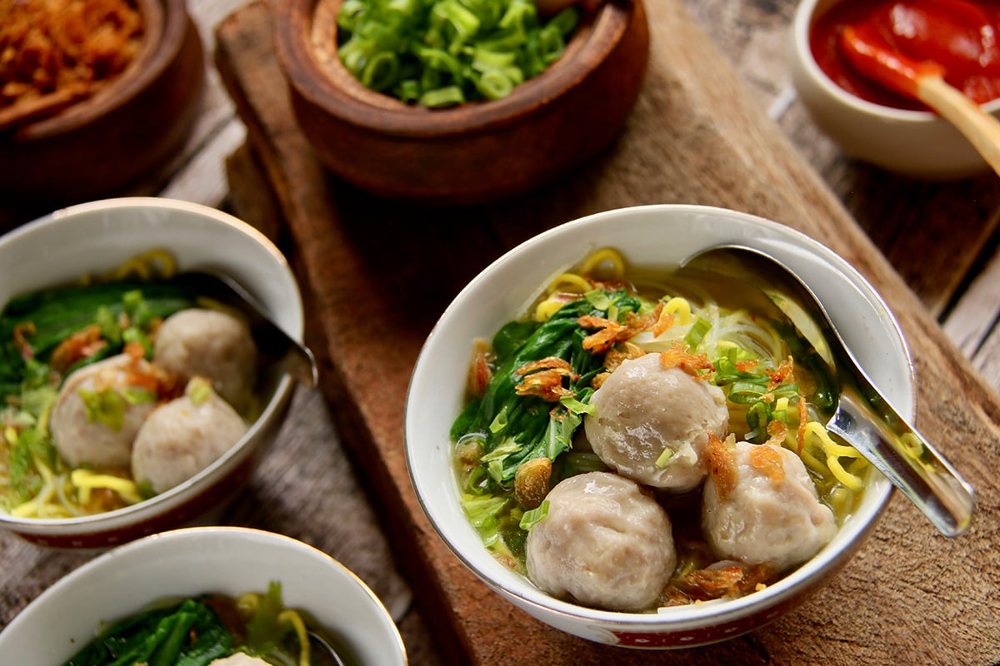

Essential comfort food that you can find almost everywhere in Indonesia, from street-vendors to five-star hotels and high-class restaurants, Bakso is brothy meatballs that are usually served with noodles, chili paste, and spring onions. Is that all? No. It’s as versatile as Nasi Goreng. There are many ways to prepare Bakso, but all the variations include meatballs and broth. Originating from the Hokkien word bak-so (肉酥, Pe̍h-ōe-jī: bah-so·), which means "fluffy meat" or "minced meat", this dish has its root in Chinese cuisine. Like Nasi Goreng, there is no exact history of when the Indonesians adopted this Chinese recipe of meatball soup as their own.
Many regions of Indonesia give their own twist to Bakso, for example, Bandung make ‘bakso cuanki’ (meatballs made with starch flour) and Malang make ‘bakso bakar’ (grilled meatball dish with broth). Nevertheless, it’s a very simple and versatile comforting dish that you can try to cook by yourself during this stay-at-home period.
Put the bones in a pot and add some water. Bring to a boil and take off any scum that rises. Add the ginger, garlic, cinnamon, cardamom, cloves, and peppercorns to the broth. Simmer for at least two hours, then strain the broth and pour back into the pot without the bones and aromatics. Heat the broth and bring to a simmer, then add the meatballs. Divide the noodles among three bowls. When everything is ready, pour the hot broth and meatballs directly into the bowls. Top each bowl of meatballs with crisp-fried shallots. Bakso is ready to be served.